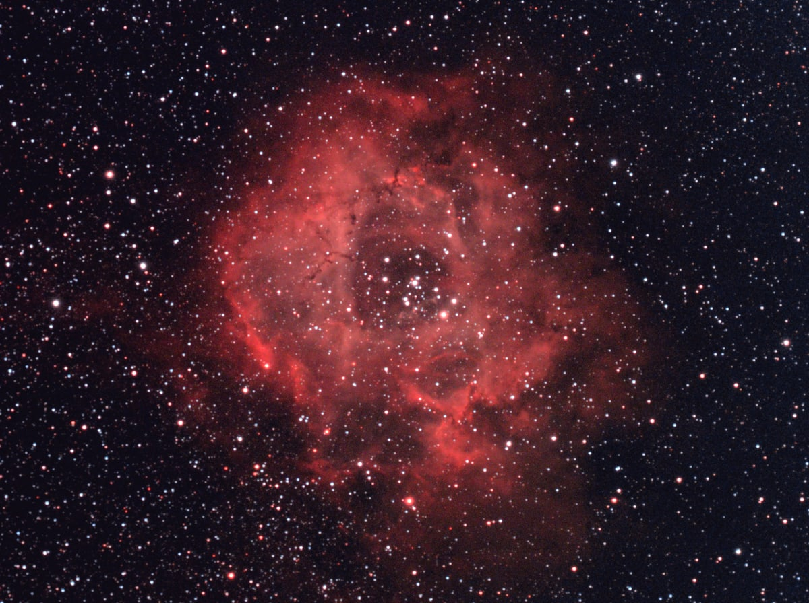
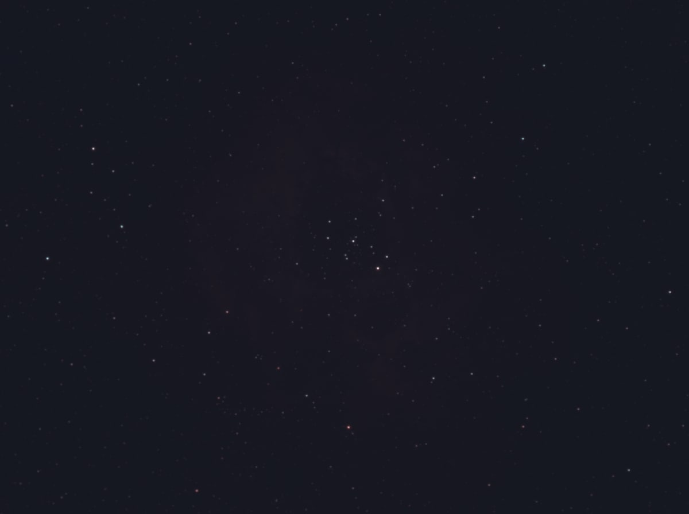
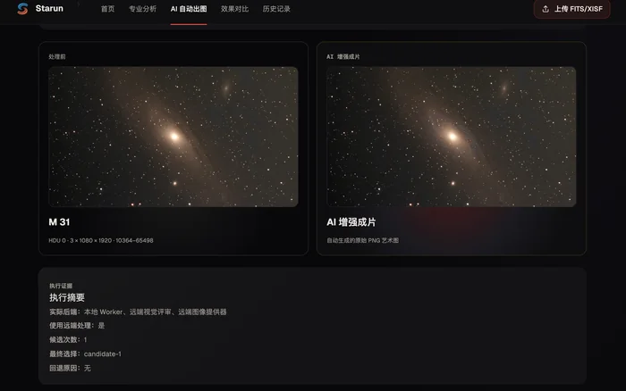
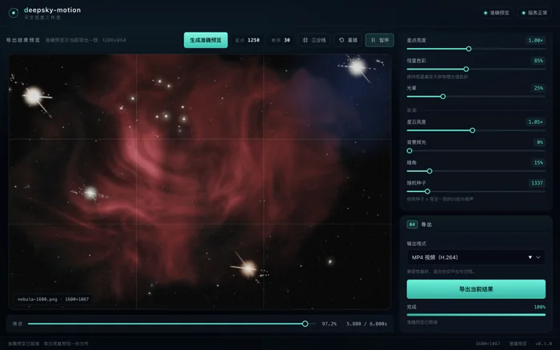
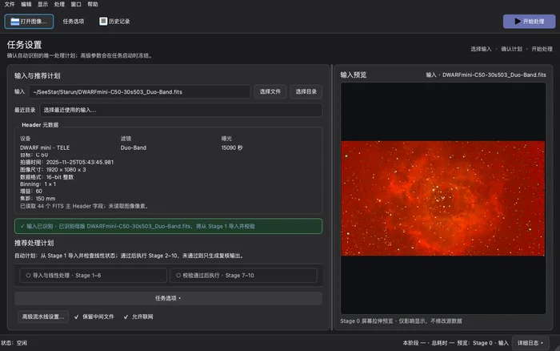
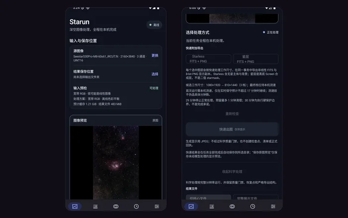
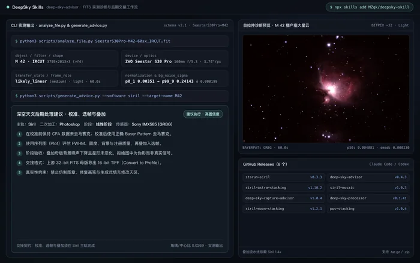
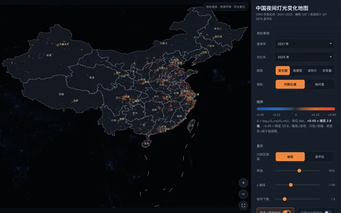

为星空，做一点东西
覆盖从选器材、找暗空，到出片与动态呈现的完整流程。

Starun 网页版
上传线性 FITS / XISF，拿到星点、噪声与动态范围的诊断报告，再选一套风格自动出图。
网页即开 · 专业分析 · AI 自动出图 · 效果对比
进入工作台
deepsky-motion 深空视差
把一张深空照片分成多层星点，用相机推进式运镜生成 3D 视差视频与实况图，导出 MP4 或动态 WebP。
在线工作台 · 星点分层 · 3D 运镜 · MP4 / WebP
体验视差运镜智能望远镜对照表
Seestar、DWARF 全系并排对比：口径、传感器、单张曝光上限、内后期能力，价格一起看。
选型参考 · 参数对照 · 口径与传感器
查看对照表
Starun 桌面端
在本机自动完成读入、叠加与拉伸，原片不出硬盘；依赖开源叠加软件 Siril 1.4+，当前需从仓库源码打包。
macOS 14+ · Apple Silicon · 需 Siril 1.4+ · 源码构建
GitHub 源码与打包指南
Starun 手机端
在 Android 上直接打开 FITS / XISF 修图分享；无联网权限纯离线运行，需源码构建 APK 并导入模型。
Android 9+ · 无联网权限 · 源码构建 APK
GitHub 源码与模型指引
DeepSky Skills
给 Claude Code、Codex、Cursor 等 Agent 装上天文工作流：拍前参谋、拍后诊断，再调开源软件 Siril 1.4+ 叠加拼接。
npx skills add MZqk/deepsky-skill · 8 个技能 Release · 需 Siril 1.4+
GitHub 获取技能与文档
找一片更暗的天空
按波特尔等级看附近的光污染，找到最近一个能拍出银河的点位。
网页应用 · 光污染分级 · 暗空点位
探索暗空点位一个开发者，
一些关于星空的想法。
白天写代码，夜晚追星光。在一次次被复杂的专业后期软件与繁重配置劝退后，我决定为自己，也为所有守望夜空的朋友，一件件把顺手的工具做出来。
我是 MZZZ。Starun 是我的个人项目集合：从 FITS 在线分析、暗空地图到 3D 视差运镜，均由我一个人独立设计、编码与维护。没有商业冗余，没有繁复门槛，原片不出硬盘。把复杂的步骤变得顺手，让更多时间留给头顶的那片星空。